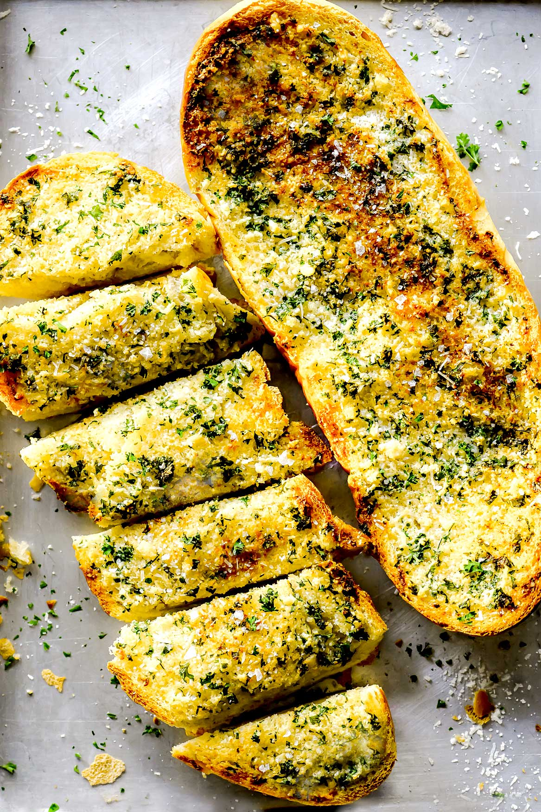

Home
Garlic Bread

Description
This recipe is amaing because of the delicious garlicky herb butter
that the bread is smothered in. This bread carries a lot of flavor
and will elevate any meal you bring it to. Everyone loves this recipe
and you will too! This recipe is also customizable with the different
herbs and cheeses you can use. Enjoy!
Ingredients
- 1/2 cup butter
- 1 1/2 tablespoons garlic powder
- 1 tablespoon dried parsley
- 1 pound load Italian bread, cut into 1/2 inch slices
- 8 ounces of shredded mozzarella cheese
Directions
- Gather all Ingredients
- Preheat the over to 350 degree F
- Melt butter in a small saucepan over medium heat;
stir in garlic powder and dried parsely
- Place bread slices on a medium baking sheet.
Using a basting brush, brush bread generously
with melted butter mixture
- Bake in the preheated oven until lighly toasted, about 10 minutes
- Sprinkle bread with mozzarella and any remaining butter mixture.
Continue baking until chees is melted and bread is lighly browned, about 5
minutes.